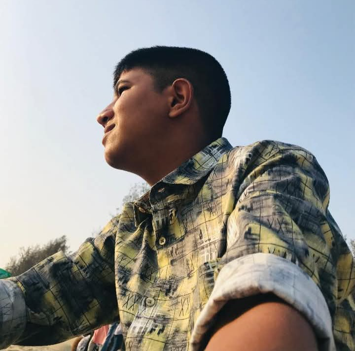

About me
I Am a Video Editor
Halo! Gue Hilmy, mahasiswa PAI di STAI Al-Hidayah Bogor, asli Jakarta Selatan. Selain kuliah, gue juga aktif di dunia desain grafis dan nulis. Udah sekitar 2 tahun gue mendalami desain, dan sering bantu orang lewat jasa desain gue. Gue juga suka sharing ilmu, salah satunya ngisi kelas desain grafis di komunitas. Gue orangnya santai, seneng belajar, dan selalu berusaha ngejalanin apa pun dengan sepenuh hati.
SKILL & TOOLS
- Membuat Desain
- Poster
- UI Design
- Website
- PowerPoint
- Undangan
- Mockup
- Cover Buku
- Banner
- Vidio Cinematic
- Vidio Jedag Jedug
- Vidio Promosi
- Menulis Puisi, Cerpen, dan Novel